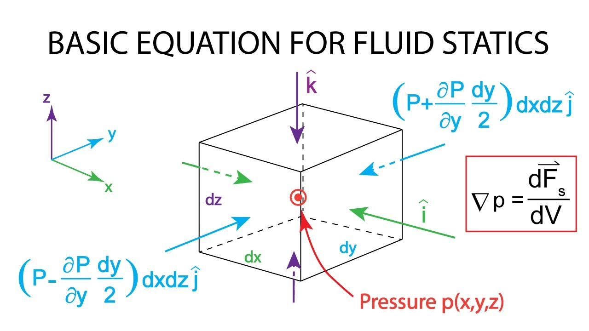
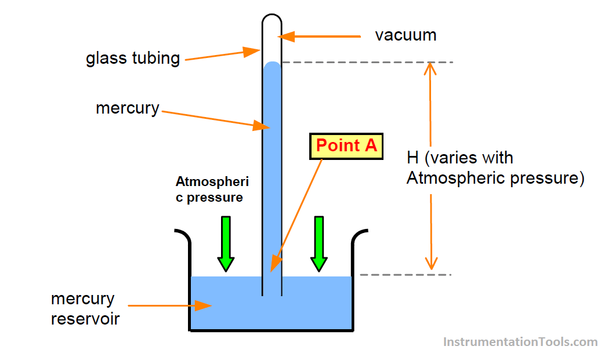
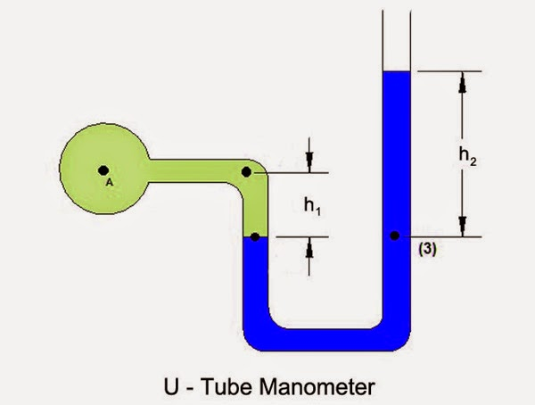

Fluid Statics
-
Fluid statics deals with study of fluids not under the
condition of flow.
-
This also means that the deformable nature of the fluid is absent.
-
For a static fluid, the only stress is the normal stress since
by definition a fluid subjected to a shear stress must deform
and undergo motion. Normal stresses are referred to as
pressure p
-

-
pressure-variation occurs in a static fluid because of gravity/acceleration
of container only.
-
If the fluid is water, static pressure is often referred as ‘hydrostatic' pressure.
-
Applications of fluid statics:
-
Static Fluids helps in understanding behaviour of oceans and atmosphere.
-
Hydraulic machines
-
Development of instruments to measure pressure
-
Pressure measurement instruments:
-
Barometer: It is used to measure atmospheric pressure.

-
Manometer: It is used to measure the pressure of
a gas inside a device/container.
